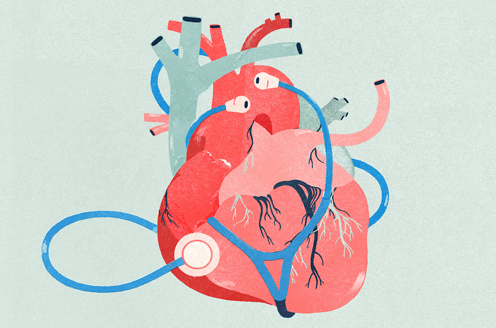

What are the dangers of excessive sugar consumption?

In a study published in 2014 in JAMA Internal Medicine, Dr. Hu and his colleagues found an association between a high-sugar diet and a greater risk of dying from heart disease. Over the course of the 15-year study, people who got 17% to 21% of their calories from added sugar had a 38% higher risk of dying from cardiovascular disease compared with those who consumed 8% of their calories as added sugar.
"Basically, the higher the intake of added sugar, the higher the risk for heart disease," says Dr. Hu.
How sugar actually affects heart health is not completely understood, but it appears to have several indirect connections. For instance, high amounts of sugar overload the liver. "Your liver metabolizes sugar the same way as alcohol, and converts dietary carbohydrates to fat," says Dr. Hu. Over time, this can lead to a greater accumulation of fat, which may turn into fatty liver disease, a contributor to diabetes, which raises your risk for heart disease.
Consuming too much added sugar can raise blood pressure and increase chronic inflammation, both of which are pathological pathways to heart disease. Excess consumption of sugar, especially in sugary beverages, also contributes to weight gain by tricking your body into turning off its appetite-control system because liquid calories are not as satisfying as calories from solid foods. This is why it is easier for people to add more calories to their regular diet when consuming sugary beverages.
"The effects of added sugar intake — higher blood pressure, inflammation, weight gain, diabetes, and fatty liver disease — are all linked to an increased risk for heart attack and stroke," says Dr. Hu.